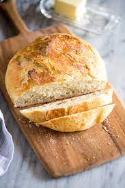

Wonderous No Knead Bread!

This no knead bread is wonderfully fluffy and tastes like magic!
It is so simple to make and is ready in just a short 12 to 18 hours! Ok, so, it takes a while
to make, but it is extremely simple and very rewarding. By making this bread invented by Davinci
himself you will not fail to impress your significant other either!
This recipe has only 4 simple ingredients that you probably already have in your pantry. Bust out
a mixing bowl, a flexible silicone spatula, a heavy bottomed duch oven and get to work!
Ingredients
- 3 cups all purpose flour
- 1 and 1/2 tsp salt
- 1/2 tsp instant yeast
- 1 and 1/2 cups room temperature water
Instructions
- In a large mixing bowl add all ingredients except water and mix them together
- Slowly add water to the dry ingredients and mix with spatula until a thick dough forms
- If the dough is too dry and still floury, add more water 1 tbsp at a time until the dough is barely wet
- Cover the mixing bowl with plastic wrap or a wet cloth
- Let the dough rest for a minimum of 12 but preferably 18 hours
- After waiting, pre-heat oven to 450
- Lay a piece of parchment paper on a flat surface and flour it well
- Slowly remove the dough from the bowl onto the parchment paper, use silicone spatula if it sticks
- Gently form dough into a ball but don't knead it!
- Pick up parchment paper and dough, put in dutch oven
- Bake covered for 30 minutes, then remove cover and bake for additional 10-15 minutes - done!